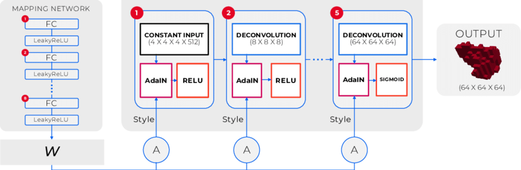

In the field of computer vision, unsupervised learning for 2D object generation has advanced rapidly in the past few years. However, 3D object generation has not garnered the same attention or success as its predecessor. To facilitate novel progress at the intersection of computer vision and materials science, we propose a 3DMaterialGAN network that is capable of recognizing and synthesizing individual grains whose morphology conforms to a given 3D polycrystalline material microstructure. This Generative Adversarial Network (GAN) architecture yields complex 3D objects from probabilistic latent space vectors with no additional information from 2D rendered images. We show that this method performs comparably or better than state-of-the-art on benchmark annotated 3D datasets, while also being able to distinguish and generate objects that are not easily annotated, such as grain morphologies. The value of our algorithm is demonstrated with analysis on experimental real-world data, namely generating 3D grain structures found in a commercially relevant wrought titanium alloy, which were validated through statistical shape comparison. This framework lays the foundation for the recognition and synthesis of polycrystalline material microstructures, which are used in additive manufacturing, aerospace, and structural design applications.

*Jangid, Devendra & Brodnik, Neal & Khan, Amil & Echlin, McLean & Pollock, Tresa & Daly, Sam & Manjunath, B.. (2020). 3DMaterialGAN: Learning 3D Shape Representation from Latent Space for Materials Science Applications. *